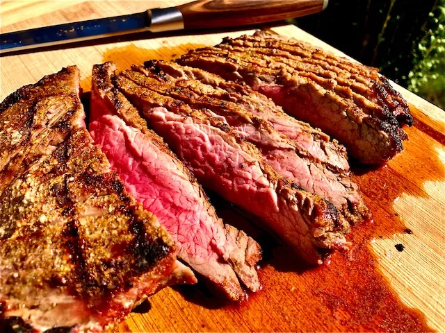

Marinated Flank Steak

Description
This crowd-pleasing flank steak marinade consists of the following ingredients:
vegetable oil, soy sauce, red wine vinegar, lemon juice, Worcestershire sauce,
Dijon mustard, garlic, and ground black pepper.
As long as you marinate the flank steak in the fridge for two to six hours,
you'll have great results. However, for the absolute best results, marinate overnight or up to 12 hours.
Ingredients
- 1/2 a cup Vegetable Oil
- 600 grams of Flank Steak
- 1/3 Cup Soy Sauce
- 1/4 Cup Red Wine Vinegar
- 1 and 1/2 tablespoons Worcestershire Sauce
- 1 Tablespoon Dijon Mustard
- 2 Cloves of Garlic
- 1/2 Tablespoon Ground Black Pepper
Steps
- Whisk together all ingredients for marinade until thoroughly combined.
- Add flank steak to the baking dish; turn several times to coat thoroughly with marinade.
- Cover, and refrigerate for 2 to 6 hours, or up to 12 hours if you have time.
- When ready to cook, preheat an outdoor grill for medium-high heat and lightly oil the grate.
- Remove steak from the marinade and shake off excess. Discard the remaining marinade.
- Cook steak on the preheated grill for about 5 minutes per side, or to desired doneness.
- Remove from the grill and let rest for 5 minutes before slicing and serving.